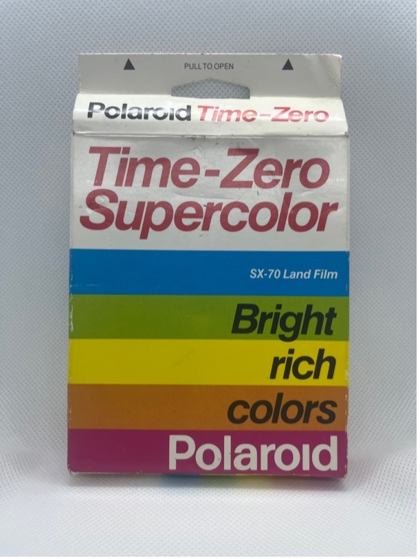
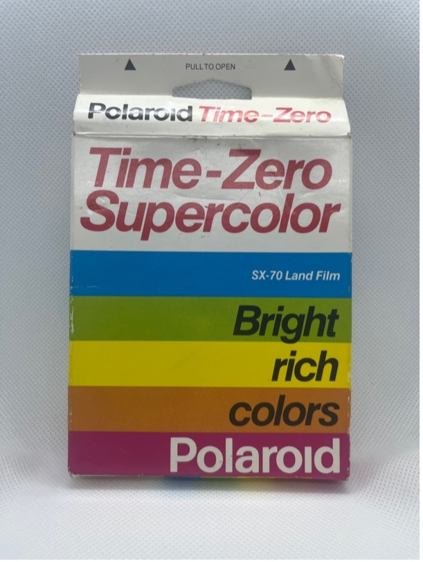

SX-70
Polaroid film Time-Zero supercolor

Datum spotřeby: 07/1991
ASA: 150
Počet snímků: 10
Barevný/ČB: barevný
Typ filmu: SX-70
Kupní cena: 239 kč
Poznámka:

Datum spotřeby: 07/1991
ASA: 150
Počet snímků: 10
Barevný/ČB: barevný
Typ filmu: SX-70
Kupní cena: 239 kč
Poznámka: